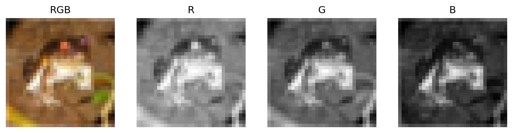
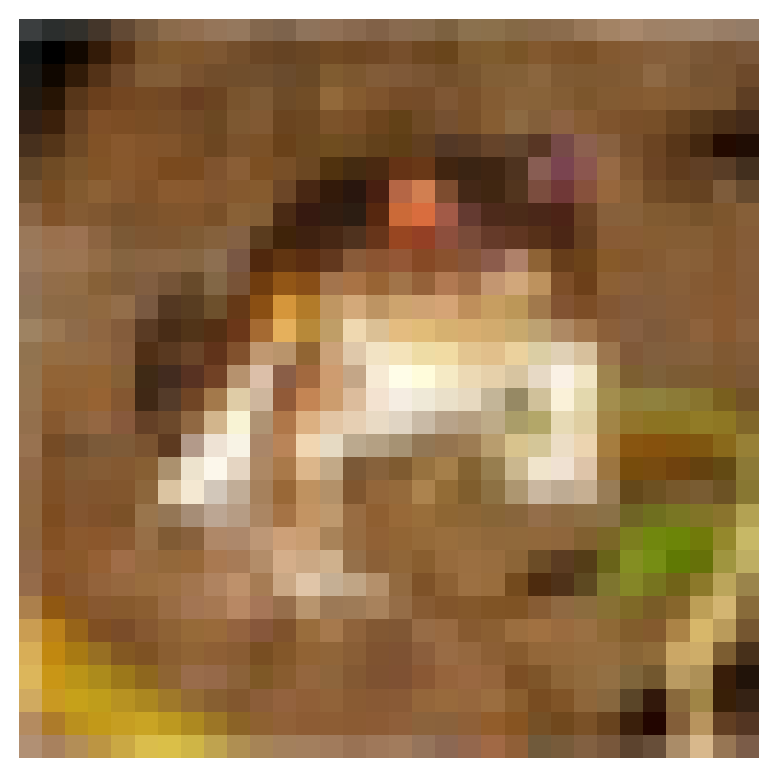

교수자 메모 (실습본에는 없음). 45분 운영: 준비·질문 4분 → 1절 흑백 한 장 6분 → 2절 컬러와 채널 5분 → 3절 ToTensor와 배치 8분 → 4절 파라미터 폭발 5분 → 5절 F.conv2d 6분 → 📝 과제 11분. ✅ 숫자: (28, 28) uint8 0~255 · Ankle boot · CIFAR (32, 32, 3) frog · ToTensor 첫 픽셀 [59 62 63] → 0.2314/0.2431/0.2471 · 배치 (64, 3, 32, 32) · Linear(3072→256) 786,688 · 2채널 예제 F.conv2d [[5, 6], [2, 5]] (6장과 같이 편향 0) · 과제 224×224 → 38,535,424 · 세로 에지 [[30, 30, 0] × 3]. 표준화(Normalize)는 여기서 다루지 않고 실습 6에서 CIFAR-10 훈련 통계로 처음 나온다.
# ▶ 준비 셀 — 그대로 실행하세요. 두 데이터셋을 내려받습니다(처음 한 번은 1~2분).import numpy as npimport torchimport torch.nn as nnimport torch.nn.functional as Fimport matplotlib.pyplot as pltfrom torchvision import datasets, transformsfrom torch.utils.data import DataLoadernp.set_printoptions(linewidth=140)torch.manual_seed(42)# CIFAR-10 원본 서버(토론토 대학)가 느려서 수업용 미러에서 받는다. 파일은 같다.datasets.CIFAR10.url ='https://github.com/ralbu85/lecture_deeplearning_labs/releases/download/data-v1/cifar-10-python.tar.gz'fmnist = datasets.FashionMNIST(root='../data', train=True, download=True)cifar = datasets.CIFAR10(root='../data', train=True, download=True)print("준비 완료!")
Files already downloaded and verified
준비 완료!
✅ 준비 완료!가 나오면 됩니다.
1. 흑백 사진 한 장은 어떤 숫자인가
fmnist는 사진과 정답의 쌍을 6만 개 담고 있습니다. 길이와 클래스 이름부터 봅니다.
💬 결과 해설 — 마지막 축 3이 R, G, B 채널입니다. arr[:, :, 0]은 빨강 채널 한 장이고 흑백 사진과 같은 (32, 32)입니다. 컬러 사진 한 장은 같은 크기의 흑백 행렬 세 장을 겹친 것입니다.
# ▶ 그대로 실행하세요 — 원본과 채널 세 장fig, axes = plt.subplots(1, 4, figsize=(11, 3))axes[0].imshow(arr)axes[0].set_title('RGB')for i, name inenumerate(['R', 'G', 'B']): axes[i +1].imshow(arr[:, :, i], cmap='gray', vmin=0, vmax=255) axes[i +1].set_title(name)for ax in axes: ax.axis('off')plt.show()

3. 신경망에 넣기 전 변환
PIL과 matplotlib은 (높이, 너비, 채널)로 다루지만, PyTorch는 채널을 앞에 두는 (채널, 높이, 너비)를 씁니다. transforms.ToTensor()는 PIL 이미지를 텐서로 바꾸면서 두 가지를 한꺼번에 합니다. 축을 (C, H, W)로 옮기고, 값을 255로 나누어 0~1 사이의 실수로 만듭니다. 픽셀의 최솟값 0과 최댓값 255는 어떤 사진이든 같으므로, 255로 나누는 것이 곧 min-max 스케일링입니다.
💬 결과 해설 — 앞으로 나오는 모든 이미지 텐서는 이 네 축 (N, C, H, W)를 갖습니다. N은 배치 크기, C는 채널, H와 W는 높이와 너비입니다. 실습 4의 (32, 9)에서 N은 그대로이고, 변수 축 하나가 (C, H, W) 세 축으로 바뀌었습니다.
4. 펼쳐서 넣으면 파라미터가 폭발한다
이론 5장의 방식대로 사진 한 장을 한 줄로 펼쳐 nn.Linear에 넣어 봅니다. flatten(start_dim=1)은 N축은 두고 나머지를 한 줄로 잇습니다. 은닉 노드는 5장과 같이 256개이고, 파라미터 수는 실습 2의 규칙 \(n_{\text{in}} \times n_{\text{out}} + n_{\text{out}}\)입니다.
# ✍️ 직접 입력flat = xb.flatten(start_dim=1)fc = nn.Linear(3*32*32, 256)print(tuple(flat.shape))print(fc.weight.shape, fc.bias.shape)print(3*32*32*256+256)
💬 결과 해설 — 입력은 (2, 3, 3), 커널은 (2, 2, 2)입니다. 첫 축이 채널이고, 커널의 채널 수는 입력의 채널 수와 같습니다.
PyTorch의 콘볼루션 F.conv2d는 배치 단위로 계산하므로 입력은 (N, C, H, W), 커널은 (커널 수, 입력 채널 수, KH, KW)여야 합니다. unsqueeze(0)은 맨 앞에 길이 1인 축을 하나 더합니다. 사진 한 장을 배치 하나로, 커널 한 개를 커널 묶음으로 만드는 것입니다.
✅ 체크포인트 — (1, 2, 3, 3) (1, 2, 2, 2) -> (1, 1, 2, 2)이고 값이 [[5, 6], [2, 5]]면 맞습니다. 6장 보드의 마지막 스텝과 같은 값입니다.
💬 결과 해설 — 채널별 결과는 따로 쌓이지 않고 더해져서 특성 맵 한 장이 됩니다. - 커널의 두 번째 축은 입력 채널 수와 같아야 합니다. 콘볼루션에서 나는 모양 오류의 대부분이 이 축입니다. - 커널의 첫 축이 커널의 개수이고 그대로 출력 채널 수가 됩니다. 커널이 8개면 특성 맵도 8장입니다. 5-2에서 그렇게 씁니다.
6. 실습 과제 (10분)
📝 과제 1 · 텐서를 그림으로 보기
3절의 x는 (3, 32, 32)입니다. plt.imshow는 (높이, 너비, 채널)만 받으므로 축을 되돌려야 그릴 수 있습니다. permute로 축 순서를 바꿔 모양을 확인하고 그립니다.
# 📝#> 힌트: x.permute(1, 2, 0)은 "원래 1번 축을 0번으로, 2번을 1번으로, 0번을 2번으로" 옮깁니다. 모양을 tuple(...shape)로 출력한 뒤 plt.imshow에 넣습니다.back = x.permute(1, 2, 0)print(tuple(back.shape))plt.imshow(back)plt.axis('off')plt.show()
(32, 32, 3)

✏️ 나의 답: 되돌린 모양 (___, ___, ___)
예시 답:(32, 32, 3). 텐서를 그릴 때는 항상 permute(1, 2, 0)으로 되돌립니다. 실습 6·7에서 사진을 그릴 때 그대로 쓰입니다.
📝 과제 2 · 224×224 사진이면 파라미터는 몇 개인가
이론 5장의 224×224 컬러 사진을 같은 은닉 노드 256개에 연결할 때의 파라미터 수를 먼저 손으로 계산한 뒤 코드로 확인합니다.
예시 답: 출력은 3×3이고 첫 두 열이 30, 셋째 열은 0입니다. 커널의 왼쪽 열(+1)이 밝은 칸 10에, 오른쪽 열(−1)이 어두운 칸 0에 걸치는 위치에서 값이 나옵니다. 커널 전체가 어두운 칸에 놓이는 셋째 열은 0입니다. 값이 큰 곳이 밝음에서 어두움으로 바뀌는 경계입니다.
📝 과제 4 · 생각해 보기
실습 4에서는 표준화의 평균과 표준편차를 훈련 세트에서 구했습니다. ToTensor가 255로 나눌 때는 왜 훈련 세트에서 값을 구하지 않아도 될까요? 한두 문장으로 적습니다.
✏️ 나의 답:
예시 답: 픽셀의 최솟값 0과 최댓값 255는 데이터에서 구한 통계가 아니라 이미지 형식이 정한 상수입니다. 어떤 사진에나 같으므로 훈련·검증·테스트에 같은 255를 쓰면 되고, 테스트 정보가 새어 들어갈 일도 없습니다. 평균·표준편차처럼 데이터에서 구하는 값은 실습 6에서 훈련 세트로 구합니다.